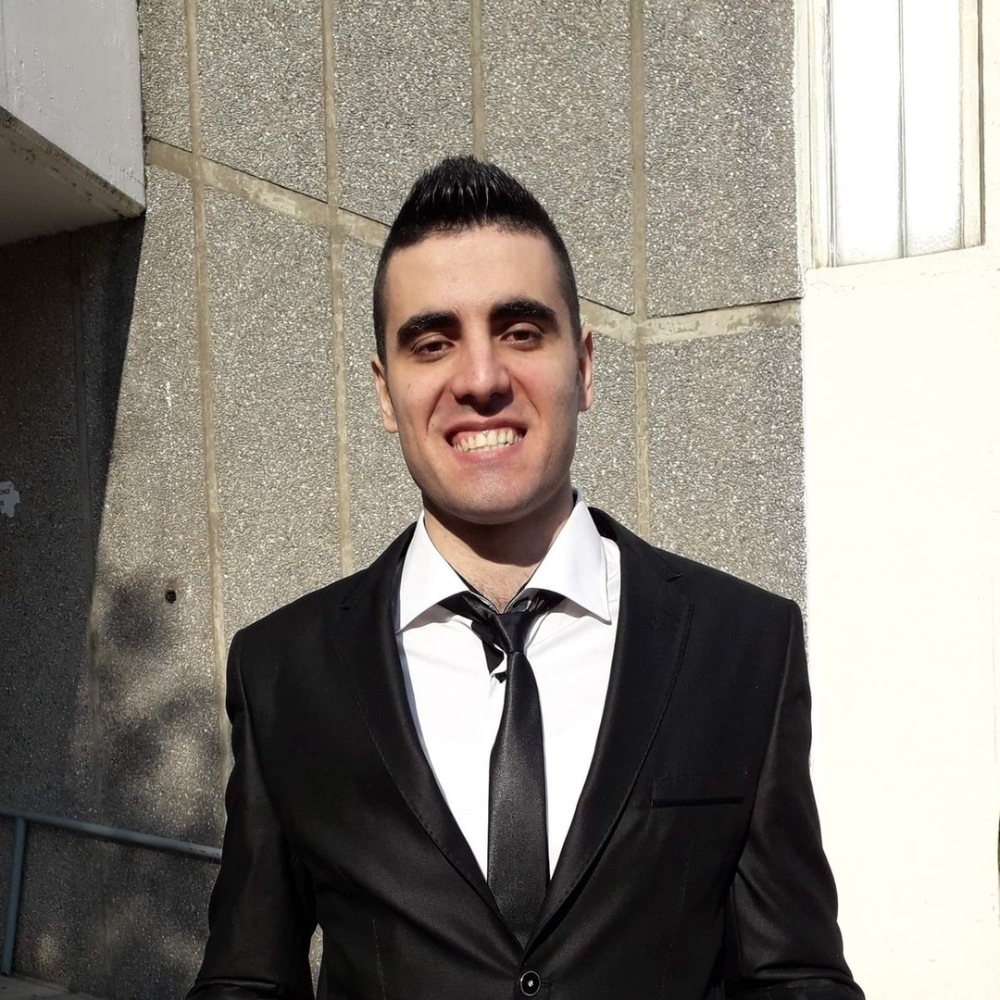

Elvir Merulić

Summary
I am a very organized and ambitious individual looking to become a great Web developer
Education
- Primary school "Savo Pejanovic"-Podgorica
- Secondary school Gimnazija "Slobodan Skerovic"
- Bachelor degree in theoretical mathematics with an average grade of 8.6/10 at University of Primorska in Koper, Slovenia
- One year of specializing in mathematics with an average grade of 8.5 at University of Podgorica
Work experience
- Internship at Gimnazija "Slobodan Skerovic" in Podgorica after which I passed the national exam and got a licence 15.01.2020.-15.10.2020.
- Mathematics and Computer Science teacher at primary school "Vladimir Nazor" in Podgorica 15.10.2020.-15.06.2021.
- Math teacher at primary school "Orjenski Bataljon" in Bijela 01.09.2021.-30.12.2021.
- Math teacher at primary school "Oktoih" in Podgorica 01.02.2022.-30.06.2022.
- Math teacher at primary school "Boško Radulović" in Komani 01.09.2022.-31.08.2023.
- Computer science teacher at secondary school "Spasoje Raspopović" in Podgorica, 01.09.2023 until now.
Skills
- Fluent in English and Slovenian. I understand Spanish and Italian quite well.
Awards
1st place at the National Competition in Mathematics in 6th grade in 2007
1st place at the National Competition in Mathematics in 8th grade in 2009
Certificate of Competing at the Junior Balkan Mathematical Olympiad in 2009
2nd place at the National Competition in Mathematics in 2010
3rd place at the National Competition in Mathematics in 2011
Certificate of Completion of Course aimed for teachers teaching in English which was organized by British Council
Certificate of fluency in English, tested by British Council, with a score of "A" on grammar, speaking, listening, vocabulary and reading. The full score was 190/200 total points.
Other
Hobbies
Contact